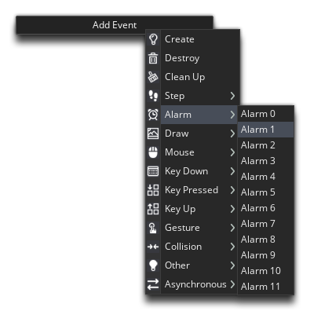
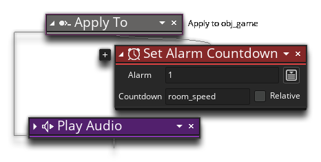
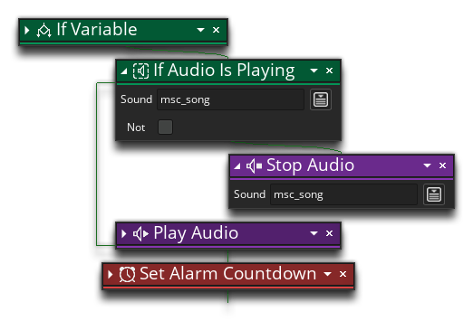

Before we can call the game finished, there is one loose end that we need to fix up. Currently, when the player dies, a life is removed and nothing else happens. What we really want to happen is to have the room start again so the player can keep playing until the 3 lives are lost and the game ends. To achieve this we need to add another Alarm Event into the object "obj_game", and in that we'll restart the room, so that when the player dies there is a short pause, and then they can start to play again with a life less.
Open the object "obj_ship" now, and add an Alarm 1 event to it:

In this event we simply want to call the following action:
The Restart Room action does just what it says and restarts the room as if it had never been entered, so the player and asteroids are all created again and the player can keep playing.
To set this alarm, we need to open the object "obj_ship" again, and in the collision event with the object "obj_asteroid" add the following actions:

The last thing we are going to do is fix the music so it restarts when the room restarts too. As we have it now, we'll be playing the song again when the room is restarted, so we'll have two, out of sync, versions of the song playing (test it and see!). This is because sounds will not stop playing when a room is changed or restarted, so you must explicitly tell GameMaker Studio 2 to stop a sound if you don't want to hear it after a restart or change. To have our music restart and only place once, we need to open the Room Start Event of the object "obj_game", and add the following in just before the call to Play Audio:

All we're doing is checking to see if the sound "msc_song" is playing using the action If Audio Is Playing..., and if it is then we stop it using Stop Audio (the next line will restart it again).
Click the "Next" button to see how to continue...